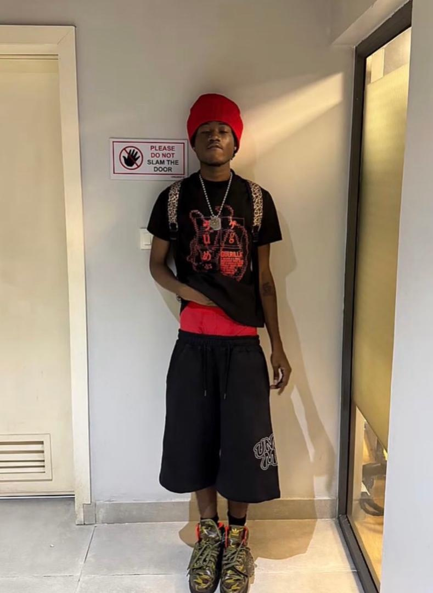

About UGM
Unchained wasn’t announced. It appeared—quiet, intentional, meant only for those tuned into the frequency. No noise, no rollout. Just a signal.
Built for the Unchained
Everything we make sits between discipline and chaos.
There's no big team. Just hands that design, build, break, re-make.
We don't chase attention. We observe who finds us.
Unchained is a code.

TENSKI SAVE ME!